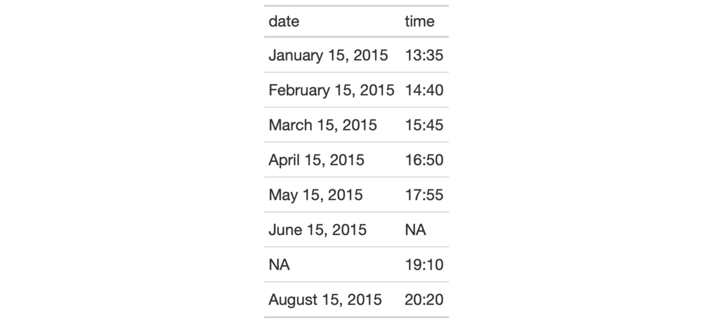
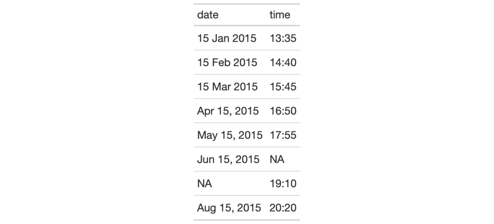

| fmt_date {gt} | R Documentation |
Format input date values that are either of the Date type, or, are
character-based and expressed according to the ISO 8601 date format
(YYYY-MM-DD). Once the appropriate data cells are targeted with columns
(and, optionally, rows), we can simply apply a preset date style to format
the dates. The following date styles are available for simpler formatting of
ISO dates (all using the input date of 2000-02-29 in the example output
dates):
iso: 2000-02-29
wday_month_day_year: Tuesday, February 29, 2000
wd_m_day_year: Tue, Feb 29, 2000
wday_day_month_year: Tuesday 29 February 2000
month_day_year: February 29, 2000
m_day_year: Feb 29, 2000
day_m_year: 29 Feb 2000
day_month_year: 29 February 2000
day_month: 29 February
year: 2000
month: February
day: 29
year.mn.day: 2000/02/29
y.mn.day: 0/02/29
We can use the info_date_style() function for a useful reference on all of
the possible inputs to date_style.
fmt_date(data, columns, rows = everything(), date_style = 2)
data |
A table object that is created using the |
columns |
The columns to format. Can either be a series of column names
provided in |
rows |
Optional rows to format. Providing either |
date_style |
The date style to use. Supply a number (from |
Targeting of values is done through columns and additionally by rows (if
nothing is provided for rows then entire columns are selected). A number of
helper functions exist to make targeting more effective. Conditional
formatting is possible by providing a conditional expression to the rows
argument. See the Arguments section for more information on this.
An object of class gt_tbl.


3-5
Other Format Data:
data_color(),
fmt_currency(),
fmt_datetime(),
fmt_markdown(),
fmt_missing(),
fmt_number(),
fmt_passthrough(),
fmt_percent(),
fmt_scientific(),
fmt_time(),
fmt(),
text_transform()
# Use `exibble` to create a gt table;
# keep only the `date` and `time` columns;
# format the `date` column to have
# dates formatted as `month_day_year`
# (date style `5`)
tab_1 <-
exibble %>%
dplyr::select(date, time) %>%
gt() %>%
fmt_date(
columns = date,
date_style = 5
)
# Use `exibble` to create a gt table;
# keep only the `date` and `time` columns;
# format the `date` column to have mixed
# date formats (dates after April will
# be different than the others)
tab_2 <-
exibble %>%
dplyr::select(date, time) %>%
gt() %>%
fmt_date(
columns = date,
rows =
as.Date(date) > as.Date("2015-04-01"),
date_style = 6
) %>%
fmt_date(
columns = date,
rows =
as.Date(date) <= as.Date("2015-04-01"),
date_style = 7
)